Путь «Бездна»
От слабой к сильной: Seq 9 «Преступник» → Seq 1 «Монарх Скверны». Сменить этот путь на другой нельзя.
| Seq | Последовательность | Ступень сервера |
|---|---|---|
| 9 | Преступник | II |
| 8 | Бескрылый Ангел | III |
| 7 | Серийный Убийца | IV |
| 6 | Дьявол | V |
| 5 | Апостол Желаний | VI |
| 4 | Демон | VII |
| 3 | Пустослов | VIII |
| 2 | Кровавый Эрцгерцог | — |
| 1 | Монарх Скверны | — |
У каждой последовательности: зелье и его ингредиенты (главный — первым), способности, которые она открывает, и отыгрыш — действия, которые переваривают зелье. Ингредиенты указаны с двумя самыми доступными источниками; все — по ссылке. Ингредиенты Seq 9–6 этого пути бывают и в товарах у жителя Торговец Потусторонних — у каждого по 2 случайных предложения на уровень (цены).
Seq 9 · Преступник
Зелье  Преступник Зелье, формула
Преступник Зелье, формула  Преступник Рецепт зелья (Последовательность 9). Эта Seq нужна для ступени II.
Преступник Рецепт зелья (Последовательность 9). Эта Seq нужна для ступени II.
Ингредиенты
 Преступник Характеристика Потустороннего (Последовательность 9) — характеристика Потустороннего
Преступник Характеристика Потустороннего (Последовательность 9) — характеристика Потустороннего- Порошок тополиных листьев — существо мода: Пузырь (водится: Мир духов; приходит и Ночью Мира духов) — 38 % за убийство. Все источники (2)
 Базилик — сундук: Хранилище Испытательных залов, Зловещее хранилище Испытательных залов — 20 %. Все источники (2)
Базилик — сундук: Хранилище Испытательных залов, Зловещее хранилище Испытательных залов — 20 %. Все источники (2)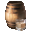
Дистиллированный спирт — крафт: печь. Все источники (2)- Искажённый гриб — обычный предмет
Способности
- Медитация — Медитировать, восполняя духовность
- Духовное зрение
- Физическое усиление (пассивная)
- Преступная сноровка (пассивная)
Отыгрыш — переваривание за действие и перерыв между засчитанными:
- Съесть золотое яблоко — 0,95 %, раз в 10 с
- Съесть подозрительное рагу — 0,47 %, раз в 5 с
- Выпить зелье — 0,95 %, раз в 10 с
- Сломать сундук — 0,76 %, раз в 10 с
- Подобрать золото — 0,57 %, раз в 5 с
- Убить исподтишка — 0,57 %, раз в 5 с
- Подобрать гнилую плоть — 0,28 %, раз в 5 с
Seq 8 · Бескрылый Ангел
Зелье 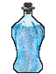 Бескрылый Ангел Рецепт зелья (Последовательность 8). Эта Seq нужна для ступени III.
Бескрылый Ангел Рецепт зелья (Последовательность 8). Эта Seq нужна для ступени III.
Ингредиенты
- Бескрылый Ангел Характеристика Потустороннего (Последовательность 8) — характеристика Потустороннего
 Экстракт жимолости — сундук: Большие подводные руины — 35 %; сундук: Затонувший корабль (сокровища) — 30 %. Все источники (3)
Экстракт жимолости — сундук: Большие подводные руины — 35 %; сундук: Затонувший корабль (сокровища) — 30 %. Все источники (3) Порошок виноградной лозы — блок: Лианы (ножницами) — 40 % за блок. Все источники (2)
Порошок виноградной лозы — блок: Лианы (ножницами) — 40 % за блок. Все источники (2) Кровь огненной саламандры — пустая бутылка: источник лавы — 50 % за попытку, бутылка остывает 2 с, обжигает: огонь на 4 с и 2 урона; сундук: Постройки Мира духов — 35 %. Все источники (4)
Кровь огненной саламандры — пустая бутылка: источник лавы — 50 % за попытку, бутылка остывает 2 с, обжигает: огонь на 4 с и 2 урона; сундук: Постройки Мира духов — 35 %. Все источники (4)- Багровый гриб — обычный предмет
Способности
- Ядовитый дым — Выпустить вокруг ядовитый дым
- Ядовитое пламя — Пламя, отравляющее и сжигающее врага
Отыгрыш — переваривание за действие и перерыв между засчитанными:
- Использовать нотный блок — 0,84 %, раз в 10 с
- Поторговать с жителем — 0,84 %, раз в 15 с
- Съесть гнилую плоть — 0,42 %, раз в 5 с
- Стоять на большой высоте — 0,25 %, раз в 20 с
Seq 7 · Серийный Убийца
Зелье 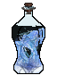 Серийный Убийца Рецепт зелья (Последовательность 7). Эта Seq нужна для ступени IV.
Серийный Убийца Рецепт зелья (Последовательность 7). Эта Seq нужна для ступени IV.
Ингредиенты
 Серийный Убийца Характеристика Потустороннего (Последовательность 7) — характеристика Потустороннего
Серийный Убийца Характеристика Потустороннего (Последовательность 7) — характеристика Потустороннего Порошок магмового пироксена — крафт: верстак; сундук: Постройки Мира духов — 27 %. Все источники (4)
Порошок магмового пироксена — крафт: верстак; сундук: Постройки Мира духов — 27 %. Все источники (4) Экстракт солнечной звезды — крафт: верстак; существо мода: Погибель (водится: Мир духов; приходит и Ночью Мира духов) — 5 % за убийство. Все источники (3)
Экстракт солнечной звезды — крафт: верстак; существо мода: Погибель (водится: Мир духов; приходит и Ночью Мира духов) — 5 % за убийство. Все источники (3) Трава середины лета — блок: Низкая трава (днём; в биоме: Равнины, Подсолнуховые поля, Цветочный лес, Луг) — 5 % за блок. Все источники (3)
Трава середины лета — блок: Низкая трава (днём; в биоме: Равнины, Подсолнуховые поля, Цветочный лес, Луг) — 5 % за блок. Все источники (3)- Песок душ — обычный предмет
Отыгрыш — переваривание за действие и перерыв между засчитанными:
- Покормить животное — 0,74 %, раз в 10 с
- Приручить животное — 0,74 %, раз в 15 с
- Поторговать с жителем — 0,74 %, раз в 15 с
- Подобрать золото — 0,44 %, раз в 5 с
- Поговорить с жителем — 0,44 %, раз в 10 с
Seq 6 · Дьявол
Зелье 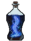 Дьявол Рецепт зелья (Последовательность 6). Эта Seq нужна для ступени V.
Дьявол Рецепт зелья (Последовательность 6). Эта Seq нужна для ступени V.
Ингредиенты
 Дьявол Характеристика Потустороннего (Последовательность 6) — характеристика Потустороннего
Дьявол Характеристика Потустороннего (Последовательность 6) — характеристика Потустороннего Сок июльского винограда — крафт: верстак. Все источники (3)
Сок июльского винограда — крафт: верстак. Все источники (3) Тёмный эльфийский лист — блок: Листья тёмного дуба — 6 % за блок. Все источники (3)
Тёмный эльфийский лист — блок: Листья тёмного дуба — 6 % за блок. Все источники (3) Сок аконита — крафт: верстак. Все источники (2)
Сок аконита — крафт: верстак. Все источники (2)- Обсидиан — обычный предмет
Способности
- Огненные заклинания — Управлять пламенем: метать огненные шары или взрывать его вокруг себя
- Язык скверны — Язык дьяволов. Применяется по-разному: замедлить цель, осквернить её или нанести огромный урон словом «Смерть»
- Облик дьявола — Принять облик дьявола
- Огненная клетка — Запереть врагов в огненной клетке
- Теневой сдвиг — Оставить двойника из тени и стремительно отпрыгнуть назад, уходя от опасности
- Меч из лавы — Взмахнуть мечом из лавы, сжигающим врагов
- Огнестойкость (пассивная)
Отыгрыш — переваривание за действие и перерыв между засчитанными:
- Использовать стол зачаровывания — 0,63 %, раз в 10 с
- Сварить зелье — 0,63 %, раз в 15 с
- Съесть торт — 0,38 %, раз в 10 с
- Съесть золотое яблоко — 0,38 %, раз в 10 с
- Подобрать золото — 0,32 %, раз в 5 с
- Применить «Язык скверны» — 1,3 %, раз в 15 с
Seq 5 · Апостол Желаний
Зелье Апостол Желаний Зелье, формула  Апостол Желаний Рецепт зелья (Последовательность 5). Эта Seq нужна для ступени VI.
Апостол Желаний Рецепт зелья (Последовательность 5). Эта Seq нужна для ступени VI.
Ингредиенты
 Апостол Желаний Характеристика Потустороннего (Последовательность 5) — характеристика Потустороннего
Апостол Желаний Характеристика Потустороннего (Последовательность 5) — характеристика Потустороннего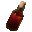
Кровь Петуха рассвета — существо мода: Дервиш (водится: Мир духов; приходит и Ночью Мира духов) — 12 % за убийство. Солнечное эфирное масло — крафт: верстак. Все источники (3)
Солнечное эфирное масло — крафт: верстак. Все источники (3) Порошок пальчатого цитрона — крафт: верстак; существо мода: Гнойная рука (водится: Мир духов) — 14 % за убийство. Все источники (4)
Порошок пальчатого цитрона — крафт: верстак; существо мода: Гнойная рука (водится: Мир духов) — 14 % за убийство. Все источники (4) Часы — обычный предмет
Часы — обычный предмет
Способности
- Аватар желания — Обратиться в призрачную густую чёрную жидкость — сгусток чувств и желаний. Всякий, кого вы коснётесь, будет осквернён, но, столкнувшись с тем, кто сильнее вас, вы потеряете контроль
- Оскверняющее семя — Посадить в цель своё семя, чтобы осквернить её
Отыгрыш — переваривание за действие и перерыв между засчитанными:
- Убить сильного моба — 0,53 %, раз в 5 с
- Убить при полном здоровье — 0,53 %, раз в 2 с
- Атаковать более сильного моба — 0,53 %, раз в 5 с
- Убить голыми руками — 0,32 %, раз в 5 с
- Стоять рядом с лавой — 0,11 %, раз в 10 с
Seq 4 · Демон
Зелье 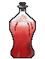 Демон Рецепт зелья (Последовательность 4). Эта Seq нужна для ступени VII.
Демон Рецепт зелья (Последовательность 4). Эта Seq нужна для ступени VII.
Ингредиенты
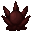
Демон Характеристика Потустороннего (Последовательность 4) — характеристика Потустороннего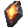
Застывшая магма — сундук: Постройки Мира духов — 7 %; существо мода: Каменный голем (водится: весь верхний мир) — 3,2 % за убийство. Сок Сияющего древа духовного договора — пустая бутылка: Пещерная лоза, Стебель пещерной лозы, Светящийся лишайник — 40 % за попытку, бутылка остывает 1 с. Все источники (3)
Сок Сияющего древа духовного договора — пустая бутылка: Пещерная лоза, Стебель пещерной лозы, Светящийся лишайник — 40 % за попытку, бутылка остывает 1 с. Все источники (3) Сок водяного папоротника — пустая бутылка: Ламинария, Стебель ламинарии, Морская трава, Высокая морская трава — 50 % за попытку, бутылка остывает 1 с. Все источники (3)
Сок водяного папоротника — пустая бутылка: Ламинария, Стебель ламинарии, Морская трава, Высокая морская трава — 50 % за попытку, бутылка остывает 1 с. Все источники (3) Компас — обычный предмет
Компас — обычный предмет
Способности
- Гадание
- Мифическая форма
- Демонические заклинания — Сокрушительная демоническая магия: создать кислотное болото, отравляющее врагов, сотворить взрывающегося двойника или воздвигнуть вокруг себя стену огня, сквозь которую никто не войдёт и не выйдет
- Туман разума — Истощать рассудок ближайших врагов и насылать случайные негативные эффекты
- Власть над желаниями — Управлять желаниями врагов, вынуждая их терять контроль
Отыгрыш — переваривание за действие и перерыв между засчитанными:
- Убить во тьме — 0,42 %, раз в 2 с
- Убить, будучи в меньшинстве — 0,42 %, раз в 5 с
- Применить «Туман разума» — 0,84 %, раз в 20 с
- Съесть гнилую плоть — 0,21 %, раз в 5 с
- Поставить табличку — 0,21 %, раз в 10 с
Seq 3 · Пустослов
Зелье 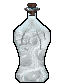 Пустослов Рецепт зелья (Последовательность 3). Эта Seq нужна для ступени VIII.
Пустослов Рецепт зелья (Последовательность 3). Эта Seq нужна для ступени VIII.
Ингредиенты
 Пустослов Характеристика Потустороннего (Последовательность 3) — характеристика Потустороннего
Пустослов Характеристика Потустороннего (Последовательность 3) — характеристика Потустороннего Сок пальчатого цитрона — крафт: верстак; существо мода: Гнойная рука (водится: Мир духов) — 5,7 % за убийство.
Сок пальчатого цитрона — крафт: верстак; существо мода: Гнойная рука (водится: Мир духов) — 5,7 % за убийство.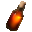
Кровь Короля петухов рассвета — существо мода: Дервиш (водится: Мир духов; приходит и Ночью Мира духов) — 5 % за убийство. Кровь Солнечной божественной птицы — существо мода: Погибель (водится: Мир духов; приходит и Ночью Мира духов) — 5 % за убийство.
Кровь Солнечной божественной птицы — существо мода: Погибель (водится: Мир духов; приходит и Ночью Мира духов) — 5 % за убийство. Бумага — обычный предмет
Бумага — обычный предмет
Способности
- Растлевающий голос — Пока активно, сообщения в чате испускают растлевающую звуковую волну, ранящую всех существ в радиусе 50 блоков и накладывающую случайные негативные эффекты. Урон зависит от длины сообщения.
- Невосприимчивость к словам (пассивная)
Отыгрыш — переваривание за действие и перерыв между засчитанными:
- Убить сильного моба — 0,47 %, раз в 5 с
- Поставить голову моба — 0,32 %, раз в 10 с
- Применить «Аура страха» — 0,63 %, раз в 20 с
- Поставить флаг — 0,19 %, раз в 20 с
- Убить нежить — 0,16 %, раз в 5 с
Seq 2 · Кровавый Эрцгерцог
Зелье 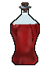 Кровавый Эрцгерцог Рецепт зелья (Последовательность 2).
Кровавый Эрцгерцог Рецепт зелья (Последовательность 2).
Ингредиенты
 Кровавый Эрцгерцог Характеристика Потустороннего (Последовательность 2) — характеристика Потустороннего
Кровавый Эрцгерцог Характеристика Потустороннего (Последовательность 2) — характеристика Потустороннего Жидкость камня святого сияния — сундук: Постройки Мира духов — 6,2 %; существо мода: Погибель (водится: Мир духов; приходит и Ночью Мира духов) — 1,7 % за убийство.
Жидкость камня святого сияния — сундук: Постройки Мира духов — 6,2 %; существо мода: Погибель (водится: Мир духов; приходит и Ночью Мира духов) — 1,7 % за убийство. Сок мутировавшего пальчатого цитрона — существо мода: Гнойная рука (водится: Мир духов) — 2,9 % за убийство.
Сок мутировавшего пальчатого цитрона — существо мода: Гнойная рука (водится: Мир духов) — 2,9 % за убийство. Порошок магмового сердца — сундук: Постройки Мира духов — 2,4 %; существо мода: Погибель (водится: Мир духов; приходит и Ночью Мира духов) — 1,7 % за убийство.
Порошок магмового сердца — сундук: Постройки Мира духов — 2,4 %; существо мода: Погибель (водится: Мир духов; приходит и Ночью Мира духов) — 1,7 % за убийство. Книга — обычный предмет
Книга — обычный предмет
Способности
- Власть ангела — Ангельская сила: странствуйте по Миру духов и сокрушайте артефакты
- Семя злобы — Посадить в цель семя злобы. Семя со временем растёт. Если вы умрёте, пока оно активно, то возродитесь на месте цели и нанесёте урон в зависимости от роста семени.
- Владыка крови — Обрести власть над кровью: выпустить её смертоносным валом или медленно разъедать врагов
- Аура страха — Излучить ауру ужаса, ослепляя, замедляя и подтачивая рассудок всех врагов поблизости
Отыгрыш — переваривание за действие и перерыв между засчитанными:
- Поджечь — 0,21 %, раз в 5 с
- Убить горящего моба — 0,21 %, раз в 5 с
- Войти в Незер — 0,17 %, раз в 30 с
- Убить босса — 0,32 %, раз в 1 мин
- Применить «Пламя Бездны» — 0,63 %, раз в 20 с
Seq 1 · Монарх Скверны
Зелье 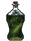 Монарх Скверны Рецепт зелья (Последовательность 1).
Монарх Скверны Рецепт зелья (Последовательность 1).
Ингредиенты
 Монарх Скверны Характеристика Потустороннего (Последовательность 1) — характеристика Потустороннего
Монарх Скверны Характеристика Потустороннего (Последовательность 1) — характеристика Потустороннего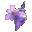
Эссенция безвременника — добыча: Хранитель — 100 % за убийство; сундук: Древний город — 25 %. Все источники (3)- Порошок пеонола из коровьих зубов — добыча: Корова (убить игроком; во второй руке Пион) — 5 % за убийство.
 Лепестки эльфийского цветка — блок: Цветок хоруса — 20 % за блок. Все источники (2)
Лепестки эльфийского цветка — блок: Цветок хоруса — 20 % за блок. Все источники (2) Бутылочка — обычный предмет
Бутылочка — обычный предмет
Способности
- Пламя Бездны — Направить Бездну в сокрушительное зелёное пламя. Обрушить дождь оскверняющих метеоров или поднять из земли столпы ядовитого огня Бездны.
Отыгрыш — переваривание за действие и перерыв между засчитанными:
- Убить сильного моба — 0,16 %, раз в 5 с
- Поставить динамит — 0,11 %, раз в 10 с
- Стоять в полной темноте — 0,042 %, раз в 20 с
- Убить босса — 0,21 %, раз в 1 мин